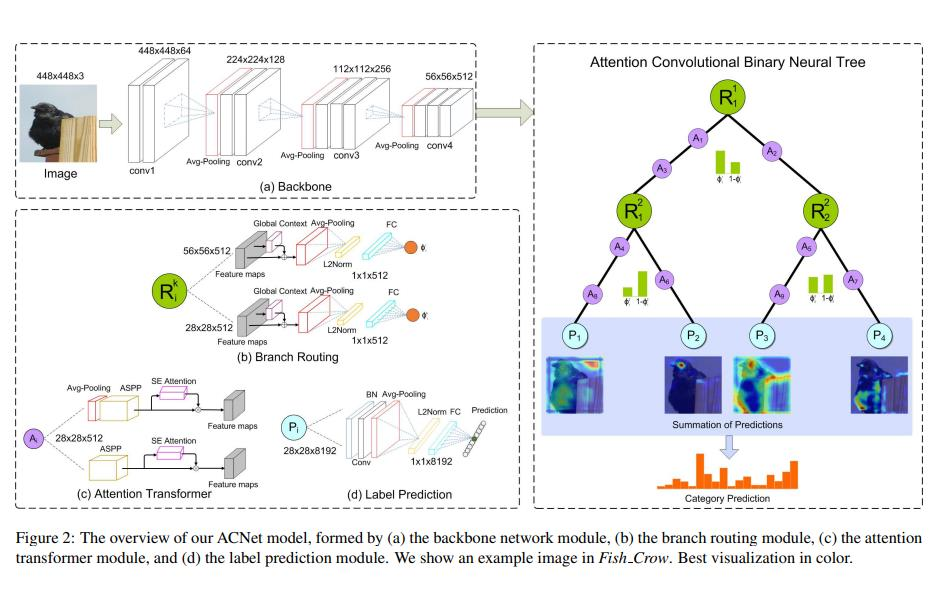
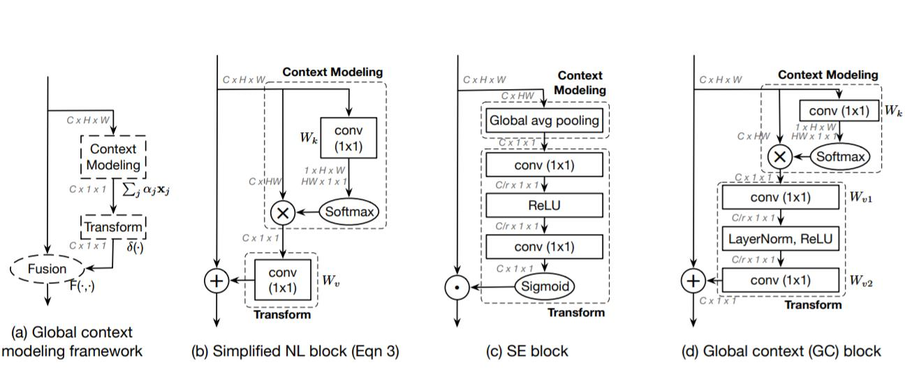
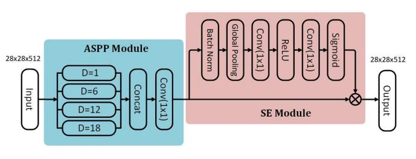
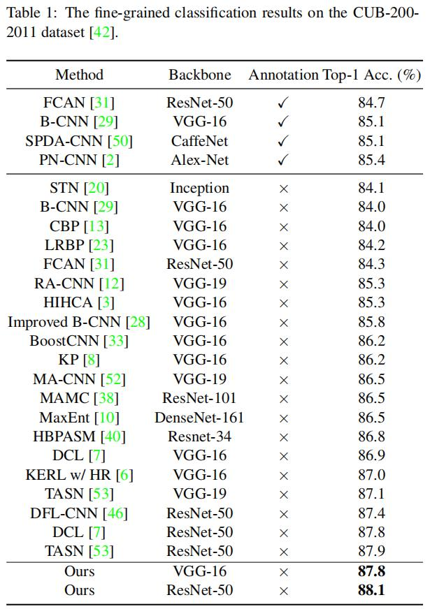
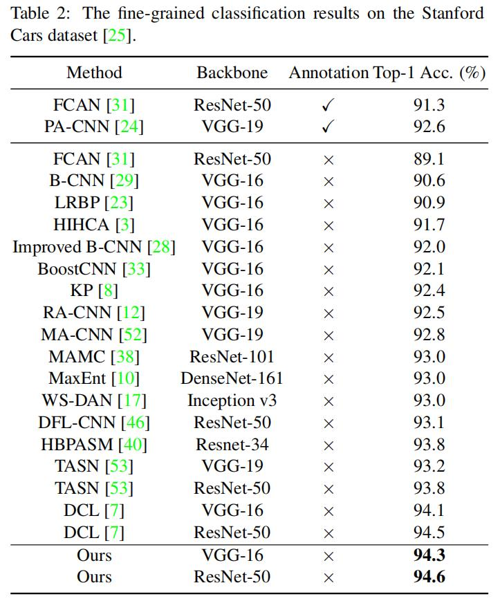
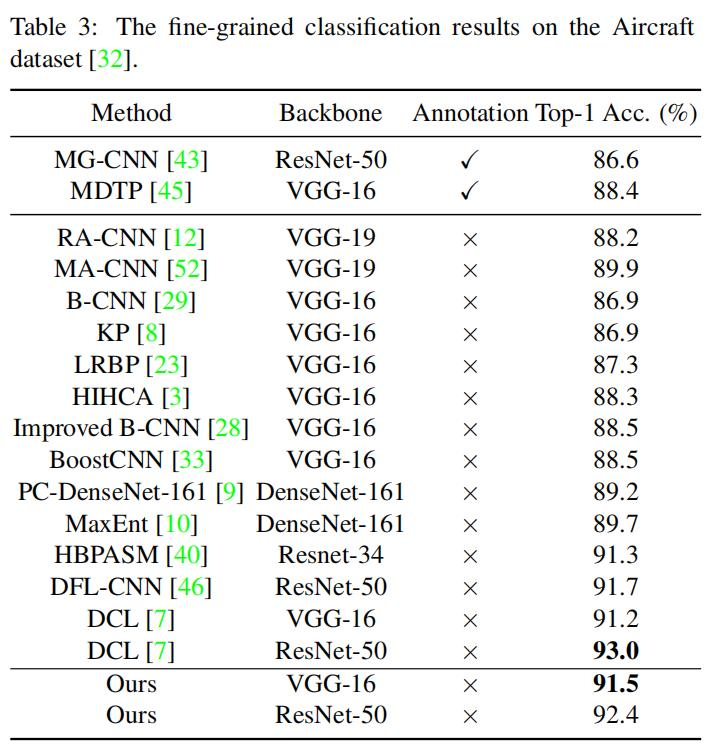

细粒度：ACNet¶
综述¶
会议时间：IEEE Conference on Computer Vision and Pattern Recognition 2020 (CVPR, 2020)
源码地址(PyTorch版本)：https://github.com/FlyingMoon-GitHub/ACNet
针对领域：细粒度图像分类(FGVC)
主要思想¶
由于遮挡、光照、变形引起的高类内方差与低类间方差，使得细粒度分类变得非常具有挑战性。对此，作者设计一种用于细粒度分类的注意力卷积二元神经树(attention convolutional binary neural tree architecture, ACNet)，它沿着树结构的边缘进行卷积运算，并且在每个结点中使用路由函数来决定从根结点到叶结点的每个路径概率。这种体系结构使得网络继承了深度卷积模型的特征表示能力，并且还可以学习由粗到细的分层特征学习过程。在这种方法下，树的不同分支关注物体的不同区域，并且可以主要学习关注区域的特征表示，最终的类别概率由所有叶结点的预测概率以及相应的路径积累概率乘积再求和得到。另外，作者还在树的每个分支上设计了注意力转换器，来强制树网络去捕捉有判别力的特征(discriminative features)，从而进一步地提高识别精度。
网络结构¶
ACNet网络主要由四个模块组成：主干网络(backbone network)、分支路由(branch routing)、注意力转换器(attention transformer)以及标签预测(Label prediction)。将ACNet定义为(T, O)，其中T定义了树的拓扑结构，O表示沿边的一系列操作，作者使用的是全二叉树T=\{V, \xi\}，其中V=\{v_1,\dots,v_n\}表示结点集，n表示结点数量，\xi=\{e_1,\dots,e_k\}表示结点间的边集，k表示边的总数。在全二叉树T中，有如下关系：n=2^h-1和k=2^h-2，其中h表示二叉树T的高度(预先定义好)，每个结点都是由决定样本发送路径(即决定样本该走哪个分支)的路由模块组成的，结点之间的边由注意力转化器组成。并且在完全二叉树T中，使用了非对称架构，即在左边缘使用两个注意力转换器，在右边缘使用一个注意力转换器。在这种情况下，网络能够捕捉不同尺度的特征，从而获得准确的分类结果，网络具体结构如下图所示：

主干网络用于提取原始图像的特征，论文中作者使用VGG16和ResNet50作为本实验的特征提取网络；分支路由用于产生每条路径的积累概率，以高度为3的二叉树为例，树最终会产生四个叶子结点，每个叶子结点分别代表了不同的路径(从根结点到叶结点的路径)，因此每条路径会对应一个积累概率，即根结点特征选择当前路径到达叶结点的概率(这里也可以看作比例，即当前路径得到的预测概率占总概率的百分之多少)，值得注意的是，四个叶结点的积累概率求和应当为1，下文中会有证明；注意力转换器用于鼓励网络捕捉有判别力的区域，特征图每经过一次注意力转换器，都会捕捉一次有判别力特征的区域，相应改变一次特征图上的数据；标签预测模块根据叶子结点上的特征图来预测类别概率，因此最后每个叶子结点都会产生一个预测概率，每个叶子结点的预测概率乘以相应叶子结点的积累概率再求和就得到了网络最终的预测概率。
分支路由模块：
作者通过设计分支路由模块来决定每个样本具体应该被送到哪个分支(该模块生成被送到左分支的概率和被送到右分支的概率)，如上图(b)所示。假设第i个路由模块命名为R^k_i(·)，首先特征图先经过一个全局上下文模块(global context block, GC)，该模块的框架由上下文模块(Context Modeling)和转换器模块(Transform)构成(如下图中a所示)，将简化的NL模块的前半部分操作提取出来(如下图b所示)，用于构成上下文模块，再将最后卷积核尺寸为1\times 1的卷积层删掉，换成SE模块(Squeeze-Excitation block，如下图c所示)，用于构成转换器，最终全局上下文模块的结构如下图d所示：

上图转自论文《GCNet: Non-local Networks Meet Squeeze-Excitation Networks and Beyond》
图片经过全局上下文模块可以更好地集成上下文信息，从而使网络可以更好地描述物体。之后再依次经过如下操作：①全局平均池化(GAP)；②元素开根再标准化(L2)；③全连接层(FC)；④Sigmoid激活函数。最后得到位于[0,1]之间的概率值，该值表示了样本被送到左侧子结点或者右侧子结点的概率。假设\phi^k_i(x_j)表示第j个样本被送到右侧子结点的概率，该概率由分支路由模块R^k_i(x_j)产生，其中\phi^k_i(x_j)\in[0,1], i=1,\dots,2^{k-1}。对应的，样本x_j被送到左侧子结点的概率就是1-\phi^k_i(x_j)，这些概率将会在最终物体类别预测的时候用到。
注意力转换器：
注意力转化器用于帮助网络捕捉具有判别力的特征，由于经验感受野(实际的感受野)要比理论感受野小，因此为了增大感受野从而捕捉判别区域，作者将ASPP(Atrous Spatial Pyramid Pooling, ASPP)模块整合到注意力转换器中。具体的来说，ASPP模块提供具有不同尺度(感受野)和注意力模块的特征图，多尺度特征图将由四个并行的扩张卷积生成，扩张率分别设置为1,6,12,18。之后，再利用卷积核尺寸为1\times 1以及步长为1的卷积操作将所得的四组特征图融合。在ASPP模块之后，作者又插入了一个注意力模块，用于生成尺寸为R^{C\times 1\times 1}的通道注意力图，注意力模块由如下六个模块构成：①批量归一化操作(BN)；②全局平均池化操作(GAP)；③全连接层(FC)；④ReLU激活函数；⑤全连接层(FC)；⑥Sigmoid激活函数。利用通道注意力图可以指导网络去关注有意义的特征以获得准确的结果，注意力转换器具体结构如下：

标签预测模块：
对于每个叶子结点，作者使用标签预测模块P_i(i=1,\dots,2^{h-1})去预测对象x_j的从属类别。假设r_i^k(x_j)为物体x_j从根结点到第i个叶子结点的积累概率，例如：如果树中根结点到叶子结点R^k_i(·)的路径是R^1_1,R^2_1,\dots,R^k_1，即物体x_j总是被送往左边，则会得到r^k_i(x_j)=\sum^k_{i=1}\phi_1^i(x_j)(这里计算得到的值为特征每次都走左边的概率)。
如网络结构图中(d)所示，标签预测模块得到特征图之后，将特征图依次经过如下几个模块：①批量归一化层(BN)；②卷积核尺寸为1\times 1的卷积层；③全局平均池化层；④将特征开根再标准化；⑤全连接层(FC，用于预测概率)。然后，最终第j个物体x_j的预测C(x_j)由所有的叶子结点的预测和相应的积累概率(由分支路由模块生成的)乘积再求和得到：
证明如下：
设r^k_i(·)为第k层，第i个分支路由模块R^k_i(·)的积累概率，因此，对应于R^k_i(·)的左右子结点的积累概率分别为r^{k+1}_{2i-1}(·)和r^{k+1}_{2i}(·)，首先证明两个子结点的积累概率之和等于其父结点的积累概率r^k_i(x_j)：
同时，由于ACNet中的树结构是完全二叉树，因此有\sum^{2^{h-1}}_{i=1}r^h_i(x_j)=\sum^{2^{h-2}}_{i-1}(r^h_{2i-1}(x_j)+r^h_{2i}(x_j))，进一步可以得到\sum^{2^{h-1}}_{i=1}r^h_i(x_j)=\sum^{2^{h-2}}_{i=1}r^{h-1}_i(x_j)，即当前层所有结点的积累概率之和为上一层所有结点的积累概率之和，逐步递推，可以得到\sum^{2^{h-1}}_{i=1}r^h_i(x_j)=\dots=r^1_1(x_j)=1。并且类别的预测P_i(x_j)由softmax生成，因此有||P_i(x_j)||_1=1，即每个结点所有类别的预测概率之和为1，因此有如下公式成立：
最终的网络结构如上图右侧所示，ACNet网络使用从粗到细的分层特征学习得到的判别特征进行分类，由图中最后叶子结点的可视化可以发现，非对称注意力转化器的加入，使得每个结点都集中关注不同尺度的特征区域，综合所有结点关注的特征，可以准确地识别图片的类别。
损失函数¶
ACNet的损失函数由两部分组成，分别为每个结点的预测损失和最终预测结果的损失，最终的损失由两部分求和得到：
实验¶
精度对比¶
CUB-200-2011

Stanford Cars

Aircraft

总结¶
本文提出了用于细粒度分类的注意力卷积二元神经树(ACNet)，具体的来说，树网络中从根结点到叶结点具有多种路径，每条路径均插入了注意力转换器，用于让网络在不同的根节点上聚焦于不同的判别力区域，最终的预测概率由每个叶节点与其相应的积累概率决定，概率最大的类别就是最终的图片类别。
注：以上仅是笔者的个人观点，若有错误，欢迎大家批评指正。
最后一次修改日期：2021年12月18日